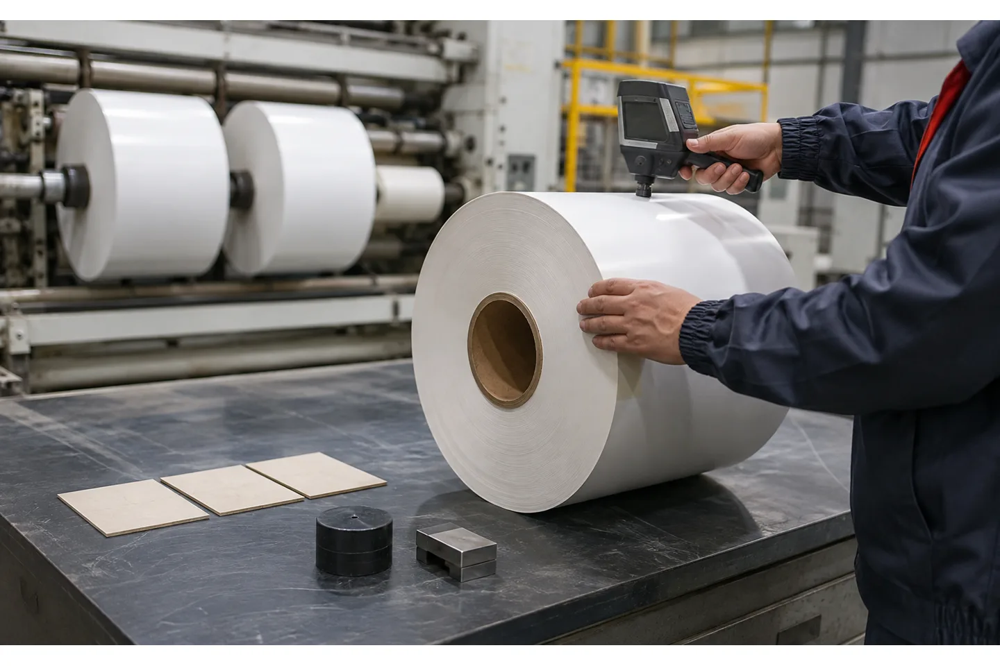

Published August 17, 2026 | By HDPTH Technical Editorial Team

Buyers often ask a slitter-rewinder supplier for “uniform hardness,” but uniform does not mean identical at every radius. The core, inner layers and outer layers experience different winding conditions. A useful acceptance requirement therefore describes a controlled profile and the downstream result: the roll must unwind, transport and process without blocking, telescoping, wrinkles or collapse.
Roll hardness is also a measurement problem. Different instruments, contact forces and operators can produce different readings. A credible specification names the method and the conditions. That gives the supplier, the buyer and the plant’s quality team a common language when a roll feels too tight or too soft after shipment.
Define what “hardness” means for your roll
In roll converting, hardness is often a practical measure of resistance to a probe or contact force. It may be used to compare firmness along the radius, across the web width or between rolls. It is not the same as material hardness, tensile strength or compression strength. Write the requirement in terms of the finished roll and its use.
Describe whether the goal is a stable core, a gradual profile, a firm edge, low air entrapment, no blocking or reliable unwinding. A film roll used in a laminator may need a different profile from a nonwoven roll sent to a wipe line. If the downstream machine has an unwind limit or a preferred roll condition, include that operational evidence rather than asking the slitter supplier to infer it.
Why a single surface reading is not enough
The outer layer is easy to reach, but it says little about the inner roll. A roll can feel firm outside while the core layers are crushed, or feel acceptable at the center while the edges are loose. Widthwise variation can come from gauge bands, tension distribution, guiding, shaft friction or a different web path at each lane.
Plan a measurement grid: near the core if the instrument permits, at one or more intermediate diameters, and at the outer surface; repeat at the left, center and right positions of a representative slit roll. Use the same rest time and temperature or conditioning procedure. The purpose is comparison, not a decorative chart. If destructive sectioning is not practical, use non-destructive measurements plus downstream unwinding evidence.
Separate winding variables from measurement variables
Hardness changes with starting tension, taper curve, nip pressure, winding speed, air entrainment, core runout, material compressibility and the friction behavior of the rewind shaft. It can also change after the roll rests. Record those inputs every time a hardness result is collected.
The measuring instrument has its own variables: probe type, force, contact time, calibration, surface location and operator technique. A supplier should provide a repeatable procedure and explain the limits of the method. If the plant already owns a tester, share the model and calibration requirement before FAT so the same tool can be used at both locations. The university roll-hardness literature also stresses operator training and a defined measurement routine rather than treating the reading as self-explanatory.

Use the roll profile to diagnose the process
A hardness curve is a clue, not a diagnosis. A steep change from the core to the first layers may indicate excessive starting pressure or torque. A soft outer band may suggest too much taper, inadequate nip or trapped air. A left-right difference may point to guiding, shaft loading, knife-lane variation or web gauge. Compare the hardness map with end-face photos and the winding trend.
Do not change tension, taper and lay-on pressure simultaneously. Make a controlled adjustment, produce a comparable roll and measure again. The roll-defects troubleshooting guide can help connect telescoping, starring, wrinkles and soft edges with likely machine variables, but the final setting should come from actual material trials.
Write a hardness-testing requirement for the RFQ
The RFQ should answer six questions: what roll is tested, with which instrument, at which points, after what conditioning time, against which limits, and for what downstream job? Add material thickness or GSM, core, finished diameter, slit width, speed and winding method. If the buyer wants a profile rather than a pass/fail number, attach a simple sketch.
- Identify the tester model or performance requirement and calibration interval.
- Define the probe force or test setting and contact duration.
- List radial and widthwise measurement locations.
- State whether the roll is measured immediately, after rest or after transport simulation.
- Link the hardness profile to acceptable unwinding and finished-roll appearance.
Need a roll-quality test that operators can repeat?
Send your roll drawing, material data and current measurement method. HDPTH can help define the FAT grid and the machine variables to record.
Discuss your project with HDPTHFAT: create comparable rolls, then measure them
During FAT, run the buyer’s material at the proposed speed and produce enough roll length for the measurement grid. Use the approved core and the same slit-width pattern expected in production. Record the recipe, starting tension, taper, lay-on pressure, speed, diameter and material lot. Measure rolls using the agreed procedure, and photograph the roll ends before handling changes the evidence.
Repeat at least one setting or width so the test shows process repeatability. If the result is outside the limit, document the correction and produce a new roll. The FAT checklist should carry the measured values, not only the statement “roll quality accepted.” Reserve one sample for the buyer’s downstream trial when practical.
Shipment, storage and commissioning matter
Hardness is not frozen at the moment the roll leaves the winding shaft. Temperature, storage time, core support and handling can change the result. Agree how the rolls will be packed, supported and measured after shipment. For an overseas installation, record the baseline at FAT so the local team can compare it after commissioning.
Before the machine arrives, prepare the floor, roll-handling route and utilities using the site-preparation checklist. During commissioning, run a short production lot, use the same hardness procedure and compare the result with the FAT baseline. If the profile shifts, check material conditioning and measurement method before retuning the machine.
How HDPTH can use the hardness requirement
HDPTH’s custom slitting and rewinding lines are evaluated from customer roll requirements rather than from a universal hardness promise. Send the target roll drawing, material data, core and downstream handling notes. The engineering team can then review tension zones, rewind shafts, lay-on control, web guiding and knife configuration together.
For a practical handover, request the final winding recipe, hardness map, FAT videos or photographs where appropriate, measurement procedure and troubleshooting notes. That package gives production managers a reference point for future raw-material changes and helps distinguish a machine adjustment from a material-lot issue.
Turn the requirement into an RFQ line item
Before comparing quotations for slitter rewinder roll hardness testing: a buyer’s guide to roll quality, put the operating requirement in a form that two suppliers can price and test in the same way. State the material family and its full working range, the parent-roll condition, the finished-roll drawing, the core, the number of lanes, the target speed and the changeover pattern. If the job includes more than one substrate, list each substrate separately instead of using a single average value.
- Define the quality result the plant must accept, such as edge condition, roll profile, web presence, winding stability or commissioning evidence.
- List the measurement method, sample size, inspection locations, conditioning time and who signs the result.
- Ask for the relevant tooling, sensor, tension, guiding, drive and guarding details in the supplier response.
- Require a FAT trial on representative material and a clear method for repeating the setup after cleaning, transport or a material change.
This structure helps procurement compare like with like and gives production, maintenance and quality teams a shared handover record. It also makes later troubleshooting faster: the team can see whether a result changed because of the material, the recipe, the measurement method or the machine. A concise requirement sheet is usually more valuable than a long list of headline specifications with no acceptance method.
Buyer FAQs
Is there one correct hardness value for a slit roll?
No. The acceptable profile depends on material, core, width, diameter, winding method and downstream use. The buyer and supplier should agree on a measurement method and material-specific limits.
Where should roll hardness be measured?
Use a defined grid from core to outer diameter and across representative width positions. The exact points depend on the instrument and whether the test can reach inner layers.
Why can two hardness testers show different results?
Probe design, contact force, calibration, surface location, contact time and operator technique can all change the reading. Use one agreed instrument and procedure for FAT and commissioning.
What machine settings affect roll hardness?
Starting and taper tension, rewind torque, lay-on or nip pressure, speed, air entrainment, core runout, shaft friction, web guiding and material compressibility can all affect the profile.
Should hardness be included in a slitter-rewinder FAT?
Yes, when roll firmness affects handling or the next process. Define the grid, instrument, conditioning time, limits and downstream check before the test.
Sources
- Roll Hardness Measurements, university technical thesis
- DFE: Slitter-Rewinder Tension Control application note
- Flexographic Technical Association: Selecting a Slitter/Rewinder
Turn “uniform roll hardness” into a measurable requirement
Share your core, diameter, widths, material range and downstream use with HDPTH. A profile-based acceptance test makes machine selection and commissioning more defensible.
Send an RFQ to HDPTH